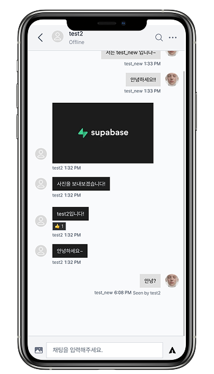
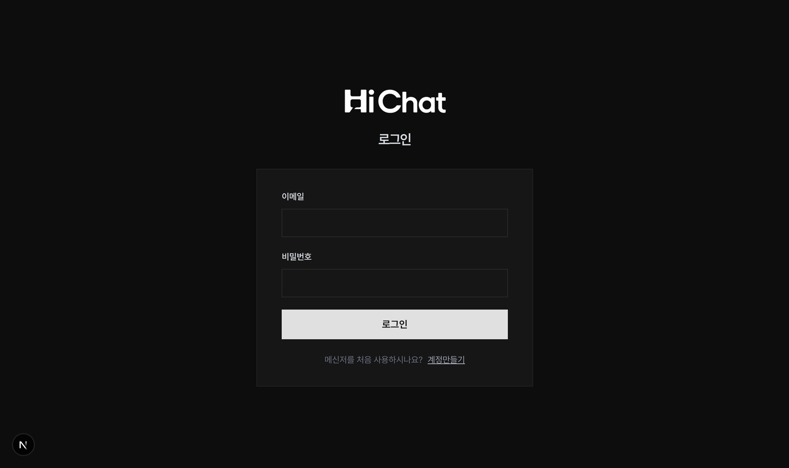
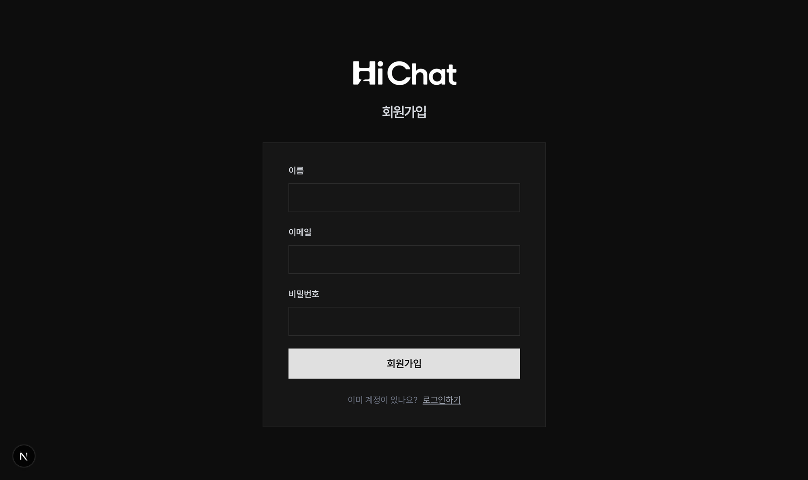

Hichat

About Project
-
프로젝트 기간:
26.04.03 ~ 26.04.19
-
프로젝트 인원:
1명(조정원)
-
역할 (담당 업무):
1. 프론트엔드 개발 100%
2. 백엔드 개발(Next.js API · Prisma · MongoDB) 100% -
프로젝트 설명:
Hichat은 Next.js App Router 기반의 풀스택 실시간 채팅 애플리케이션입니다.
1:1 및 그룹 채팅, 이모지 반응, 메시지 답장, 메시지 검색, 타이핑 인디케이터, 읽음 표시, 이미지 전송 등 핵심 기능을 모두 구현했습니다.
사용자는 이메일/비밀번호으로 접속하며, Pusher를 통해 모든 상태 변경이 페이지 새로고침 없이 실시간 반영됩니다. -
기술 스택:
- Next.js 16 (App Router) · React 19 · TypeScript 5
- NextAuth 4 (Credentials)
- Prisma 6 ORM · MongoDB (Atlas)
- Pusher (실시간 WebSocket)
- Cloudinary (이미지 업로드 · CDN)
- Tailwind CSS v4 · Zustand · React Hook Form - URL:
Frontend Development
(1) 아키텍처 설계 - Next.js 16 App Router
-
Server Component / Client Component 역할 분리
-
서버 컴포넌트 - 데이터 패칭 전담
레이아웃과 페이지 컴포넌트는 서버에서 Prisma로 대화 목록·메시지·유저 정보를 조회한 뒤 클라이언트 컴포넌트에 초기 데이터를 props로 전달합니다. 별도의 로딩 API 왕복 없이 첫 화면을 완성된 상태로 렌더링해 초기 로드 성능을 확보했습니다. -
클라이언트 컴포넌트 - 인터랙션 및 실시간 담당
"use client"지시자를 명시한 컴포넌트(ConversationList, Body, Form 등)가 Pusher 구독, 상태 업데이트, 폼 입력 등 모든 사이드이펙트를 처리합니다. 서버/클라이언트 경계를 파일 단위로 명확히 나눠 번들 크기를 최소화했습니다. -
Server Actions - 인증된 서버 사이드 데이터 조회
getCurrentUser,getConversations,getMessages등 핵심 조회 로직을 Server Actions로 구성해, 클라이언트에서 세션 토큰을 직접 다루지 않아도 되는 안전한 데이터 레이어를 구축했습니다. -
API Routes - 뮤테이션 전담 REST 엔드포인트
메시지 전송·삭제, 반응 토글, 대화 생성, 타이핑 이벤트 등 상태를 변경하는 모든 작업은/app/apiRoute Handler로 분리했습니다.
(2) 인증 시스템 - NextAuth 4 · Bcrypt · 다중 프로바이더
Credentials Provider -
이메일/비밀번호 기반 자체 인증을 구현했습니다. 회원가입
시 bcrypt로 비밀번호를 단방향 해싱해 MongoDB에 저장하고,
로그인 시 bcrypt.compare로 검증합니다.
서버에서만 실행되는 authOptions에 인증
로직을 캡슐화해 클라이언트에 시크릿이 노출되지 않도록
했습니다.
세션 전략 - JWT 세션 방식으로
데이터베이스 조회 없이 인증 상태를 검증합니다.
getCurrentUser Server Action이 세션의
이메일로 Prisma 사용자를 조회해 서버 컴포넌트 어디서든
인증된 유저 정보를 안전하게 제공합니다.


(3) 실시간 통신 아키텍처 - Pusher WebSocket
메시지 전송·수정·삭제, 대화 목록 업데이트, 타이핑
인디케이터, 온라인 상태 등 앱의 모든 실시간 이벤트를
Pusher 채널로 처리합니다.
채널 구조 - 유저 이메일을
채널명으로 사용하는 개인 채널(대화 목록 업데이트)과 대화
ID를 채널명으로 사용하는 대화 채널(메시지 이벤트)로
이원화했습니다. 이를 통해 특정 대화의 참여자에게만
이벤트가 전달되도록 스코프를 제어합니다.
이벤트 흐름 - API Route에서 DB
뮤테이션 완료 후 즉시 pusher.trigger()를
호출합니다. 클라이언트 컴포넌트는 마운트 시 채널을
구독하고, 언마운트 시 unsubscribe()를
호출해 메모리 누수를 방지합니다.

(4) 데이터 모델 설계 - Prisma 6 · MongoDB
User -
이메일(unique)·이름·해싱된 비밀번호·프로필 이미지를
저장합니다. conversationIds로 다대다 관계의
대화 목록을, seenMessageIds로 읽음 처리된
메시지 목록을 배열로 참조합니다.
Conversation -
isGroup 플래그로 1:1 및 그룹 채팅을 단일
컬렉션에서 관리합니다. lastMessageAt을
갱신해 대화 목록을 최신 메시지 순으로 정렬하고,
userIds로 참여자를 참조합니다.
Message - 텍스트 body와 이미지
URL을 함께 저장할 수 있으며, deletedAt을
통한 소프트 삭제, replyToId를 통한 자기
참조 답장, reactions 임베디드 배열을 통한
이모지 반응을 지원합니다. 복잡한 메시지 기능을 추가
컬렉션 없이 단일 문서 구조로 해결해 조회 비용을
최소화했습니다.
Reaction (임베디드 타입) -
emoji · userId · userName 필드를 Message
문서 안에 배열로 임베딩해 반응 조회 시 JOIN 없이 단일
쿼리로 처리합니다.
(5) 메시지 핵심 기능 구현
이모지 반응 - 6종(👍❤️😂😮😢😡)
이모지를 메시지에 토글 방식으로 추가·제거합니다. 이미
반응한 경우 동일 이모지 클릭 시 제거되며, 같은 이모지를
반응한 유저 수를 묶어 표시합니다. 내가 반응한 이모지는
배경색으로 시각적으로 구분됩니다.
답장(Reply Threading) -
메시지에 replyToId를 통한 자기 참조 구조로
원본 메시지를 연결합니다. 전송 폼 위에 인용 프리뷰를
표시해 답장 컨텍스트를 유지하고, 원본이 삭제되어도 답장
체인이 끊기지 않도록 설계했습니다.
소프트 삭제 - 메시지를 DB에서
제거하지 않고 deletedAt 타임스탬프를
기록합니다. UI에서는 "삭제된 메시지입니다"
플레이스홀더로 대체 렌더링해 답장 체인의 맥락을
유지합니다.
메시지 검색 - 클라이언트 사이드
필터링으로 입력값과 일치하는 메시지를 대소문자 구분 없이
실시간으로 하이라이팅합니다. 검색 결과는 기존 시간순
정렬을 유지한 채 노란 배경으로 매칭 텍스트를
시각화합니다.
타이핑 인디케이터 - 사용자가
입력할 때 /api/typing으로 이벤트를
브로드캐스트하고, 2초간 추가 입력이 없으면 자동으로
종료됩니다. 입력 중인 유저 이름을 실시간으로 표시해 대화
참여감을 높입니다.
읽음 처리(Read Receipt) -
대화방 진입 시
/api/conversations/[id]/seen을 호출해
미확인 메시지를 일괄 처리하고, Pusher로 읽음 상태를
실시간 갱신합니다.
(6) 상태 관리 전략 - Zustand · Context · LocalStorage
상태의 성격에 따라 관리 레이어를 분리해 불필요한 전역
상태 의존을 제거했습니다.
Zustand - 온라인 유저 목록(Active List)
Pusher 프레즌스 채널에서 수신되는 접속/해제 이벤트를
Zustand 스토어에 반영합니다. 컴포넌트가 스토어를 직접
구독해 온라인 상태 뱃지를 자동 갱신합니다. Redux처럼
보일러플레이트 없이 전역 실시간 상태를 최소 코드로
관리할 수 있어 선택했습니다.
React Context - 인증·테마·알림 토스트
AuthContext(NextAuth SessionProvider),
ThemeContext(다크 모드 토글),
ToasterContext(react-hot-toast)를 루트
레이아웃에서 주입해 앱 전역에서 접근 가능하도록
했습니다.
LocalStorage - 다크 모드 · 대화 고정
페이지 새로고침 후에도 유지되어야 하는 UI 선호값(테마,
고정된 대화 ID 배열)은 LocalStorage에 직렬화해
영속합니다. 세션과 무관한 클라이언트 선호 정보를 DB에
저장하지 않아 서버 부담을 줄였습니다.
(7) 이미지 업로드 - Cloudinary · Next.js Image 최적화
Cloudinary CDN 연동 -
next-cloudinary의
CldUploadButton을 메시지 폼과 프로필 설정에
삽입해, 클라이언트에서 파일 선택 즉시 Cloudinary 서버로
직접 업로드(Unsigned Upload)됩니다. 반환된 Public ID를
DB에 저장해 CDN URL을 동적으로 생성합니다.
Next.js Image 최적화 -
next.config.ts에 Cloudinary 도메인을
remotePatterns로 등록해
next/image의 자동 WebP 변환, lazy loading,
blur placeholder 등 이미지 최적화 기능을 외부 CDN
이미지에도 적용했습니다.
이미지 뷰어 모달 - 채팅 내
이미지 클릭 시 ImageModal 컴포넌트가 원본
크기로 오버레이 표시됩니다.
@headlessui/react Dialog를 기반으로 접근성
규격에 맞는 포커스 트랩과 ESC 닫기를 지원합니다.
(8) 스타일 시스템 - Tailwind CSS v4 · 반응형
Tailwind CSS v4 커스텀 테마 -
globals.css의 @theme 블록에
primary(#FFB84D), secondary(#FEE500) 등 브랜드 컬러를
CSS Custom Properties로 정의해 Tailwind 유틸리티
클래스(bg-primary,
text-primary)로 바로 사용합니다. 디자인
토큰이 단일 파일에서 관리되어 색상 수정 시 전체 UI에
즉시 반영됩니다.
반응형 레이아웃 - 사이드바는
hidden lg:flex로 데스크탑에서만 표시되고,
모바일에서는 하단 MobileFooter가 네비게이션을
대체합니다. 대화 목록(80px)과 채팅 영역은
lg:pl-80 / lg:pl-20으로
사이드바 폭에 맞게 자동 보정됩니다.
(9) 그룹 채팅 · 대화 관리
그룹 채팅 생성 - 이름 입력과
2명 이상의 참여자 선택으로 그룹 대화를 생성합니다.
react-select 멀티셀렉트로 유저 목록에서
참여자를 선택하고, 현재 로그인 유저는 자동으로
포함됩니다. 생성 완료 시 Pusher로 모든 참여자에게
conversation:new 이벤트를 브로드캐스트해
각자의 대화 목록에 즉시 반영합니다.
대화 고정(Pin) - 자주 사용하는
대화를 LocalStorage에 고정 등록하면 대화 목록 최상단에
배치됩니다. 서버 요청 없이 클라이언트에서 정렬 로직을
처리해 즉각적인 UX를 제공합니다.
대화 목록 실시간 업데이트 -
ConversationList가 유저 채널을 구독해 새
메시지가 도착하면 해당 대화의 lastMessageAt을 갱신하고
목록 순서를 재정렬합니다. 페이지 이동 없이 사이드바가
항상 최신 상태를 유지합니다.